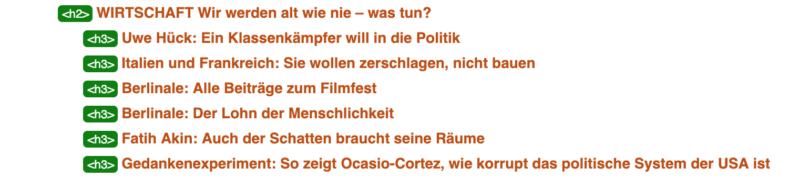
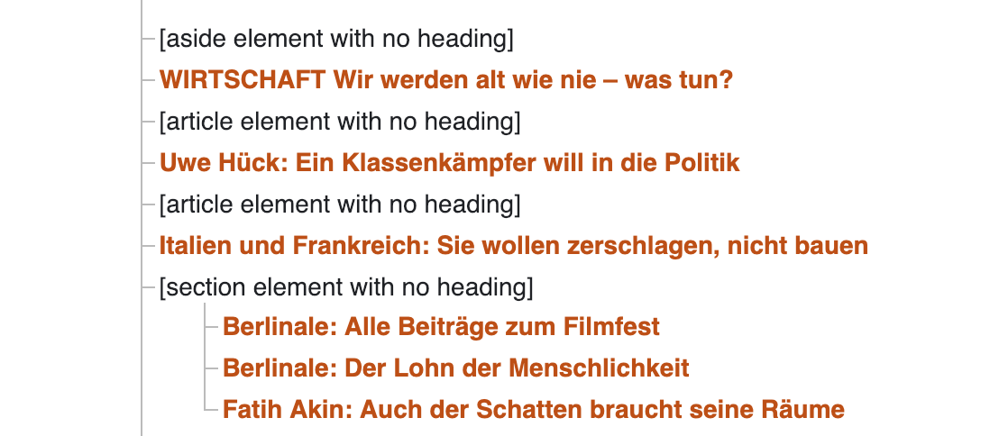
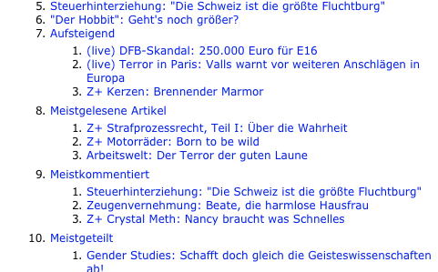
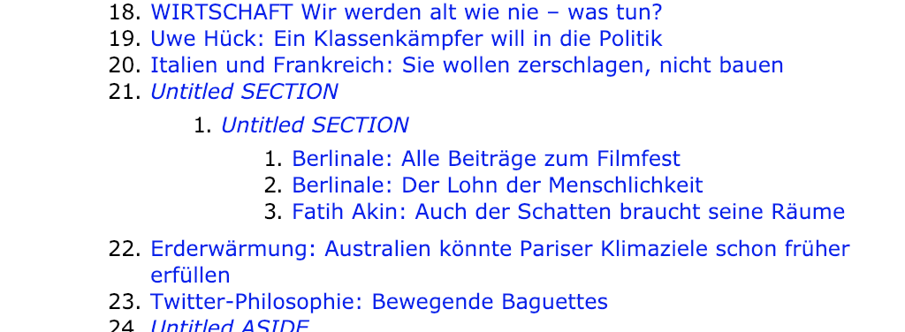
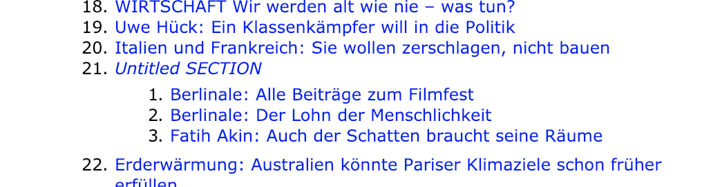
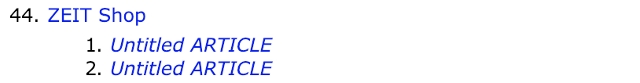
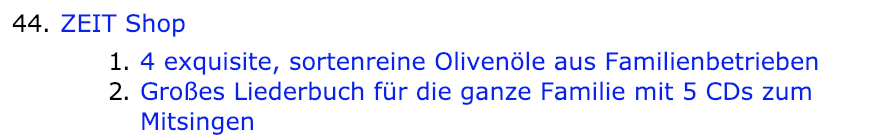
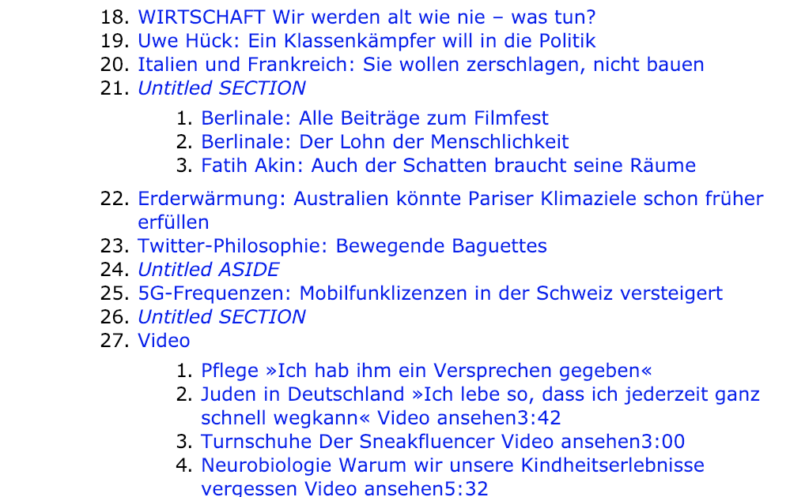

Small Wins: Improving our Document Outline¶
The document outline is a way to overview and navigate a web page. It provides a high-level overview on a page, and is mostly used by screen readers to provide meaning and allow navigation for people who cannot access the visual representation of the page. At ZEIT Online we actively shape this outline, in order to improve the accessibility of our news website. This post shows some practical examples of that process.
What is the document outline?¶
The document outline represents the logical or semantical structure of an HTML document. This is a little difficult because there are two concepts: hierarchy of headlines h1 to h6 and the nested structure of sections and divs.
That whole topic is a big dilemma, but nevertheless we can try to improve our sites to explain the sites structure to people (or machines) who cannot access the visible representation.
That’s what we did recently with our homepage on www.zeit.de.
How the document outline was before¶
How can we even see the outline, without actually using a screen reader?
There are ways to make the document outline visible. The easiest one is a Chrome browser extension “HTML Outliner”. It simply renders the document outline of a web site. Because it runs in the browser, we could also use it on localhost during development.
The same tool is also available as Bookmarklet.
Another great tool is the Nu Html Checker from the W3C, which checks online URLs, but also accepts text input, which enabled us to test local versions of our site during development.
The HTML Checker provides two kinds of outline, which illustrates perfectly the dilemma mentioned above:
heading level outline
structural document outline
How we improved¶
1) Use correct container tags¶
The type HTML tags that we use directly shapes the document structure. While divs are just containers for styling purpose, the section and article HTML5 tags actually provide meaning and structure.
<div>
<h2>Meistgelesene Artikel</h2>
<ol>
<li><article><h3>Teaser 1</h3></article></li>
<li><article><h3>Teaser 2</h3></article></li>
<li><article><h3>Teaser 3</h3></article></li>
</ol>
</div>

<section>
<h2>Meistgelesene Artikel</h2>
<ol>
<li><article><h3>Teaser 1</h3></article></li>
<li><article><h3>Teaser 2</h3></article></li>
<li><article><h3>Teaser 3</h3></article></li>
</ol>
</section>

By using a section instead of a div we opened a new outline scope/nesting and made clear that the headline type actually represents a hierarchy.
In another case, we changed the container tag the other way around: from section to div. A teaser box which was defined as section also had a section as wrapper, which resulted from our CMS structure and the way centerpages are built. These two nested sections were reflected in the document outline, with one superficial level:

<div>
<section>
<section> <!-- this was changed to div -->
<article><h3>Teaser 1</h3></article>
<div>
<article><h3>Teaser 2</h3></article>
<article><h3>Teaser 3</h3></article>
</div>
</section> <!-- this was changed to div -->
</section>
</div>
By changing one container from section to div, we could flatten the outline hierarchy.

You will notice that the section is still untitled. This is because the included teasers are of the same hierarchy, and currently there is no element which can be used as title.
While the flattening surely made the outline a bit better, there is still room for improvement.
2) Promote relevant text nodes¶
By assigning headline status to text nodes which do not look like headlines (in our case descriptions of products in our shop) these nodes get respected as the elements title in the document outline.

before:
<p class="shopitem__text">{{ teaser.teaserText }}</p>

after:
<h3 class="shopitem__text">{{ teaser.teaserText }}</h3>

By the way, these changes are easily done because we use BEM as our CSS system.
How we can improve more¶
We still have untitled sections 
Some things should be hidden from the outline (or even the DOM)